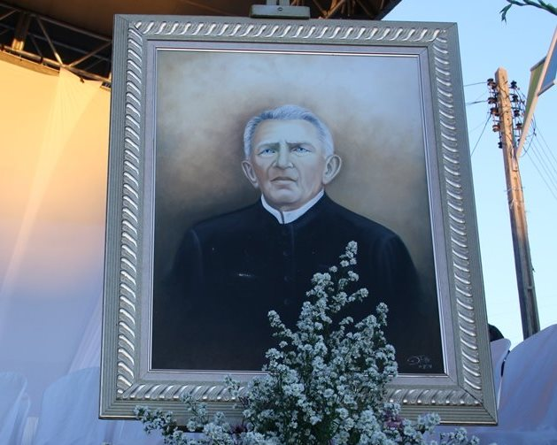

História de Padre Cícero

Padre Cícero Romão Batista, nascido em 24 de março de 1844, na cidade de Crato, no Ceará, é uma figura emblemática na história do Brasil, especialmente na região nordestina. Sua trajetória está intrinsecamente ligada à cidade de Juazeiro do Norte, onde ele desempenhou um papel crucial na vida religiosa e política.
Padre Cícero estudou teologia em Fortaleza e foi ordenado sacerdote. Em 1872, ele foi designado para a paróquia de Nossa Senhora das Dores, em Juazeiro do Norte, uma cidade pequena e de difícil acesso na época. Na virada do século XIX para o século XX, a região enfrentava desafios socioeconômicos, incluindo secas devastadoras que causavam grande sofrimento à população.
Um dos episódios mais famosos associados a Padre Cícero aconteceu em 1889, quando, durante uma missa, acredita-se que uma hóstia consagrada se transformou em sangue em suas mãos. Esse evento, conhecido como o "Milagre de Juazeiro", atraiu a atenção de milhares de fiéis e consolidou a fama de Padre Cícero como um santo vivo, cuja influência perdura até os dias de hoje.
Além de suas atividades religiosas, Padre Cícero também desempenhou um papel importante na política local, usando sua influência para buscar melhorias para a população de Juazeiro do Norte, incluindo a defesa de causas sociais, como a construção de açudes e a distribuição de terras para os mais necessitados.
Sua crescente influência e seu envolvimento na política causaram conflitos com a hierarquia da Igreja Católica. Em 1892, ele foi suspenso de suas funções sacerdotais e proibido de celebrar missas publicamente, mas sua popularidade entre os fiéis permaneceu inabalável.
Padre Cícero faleceu em 20 de julho de 1934, mas sua influência continuou a crescer após sua morte. Ele é lembrado como um líder religioso carismático e uma figura emblemática da religiosidade popular no Nordeste do Brasil. Milhares de peregrinos visitam sua cidade natal, Juazeiro do Norte, todos os anos para prestar homenagem a esse líder carismático e venerado.